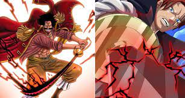

Explicación de las frutas del diablo
Click en la foto para entrar

Explicación del haki
Click en la foto para entrar
Los mugiwaras
Click en la foto para entrar
Explicación sagas
Click en la foto para entrar
Explicación del anime de One Piece
One Piece es un anime de aventuras y fantasía creado por Eiichiro Oda, que sigue la historia de Monkey D. Luffy, un joven pirata con el sueño de convertirse en el Rey de los Piratas, no por ambición o poder, sino para ser el hombre más libre del mundo. Su viaje lo lleva a recorrer un mundo vasto y peligroso, lleno de islas únicas, razas fantásticas, enemigos poderosos y una historia prohibida: el Siglo Vacío, un periodo borrado por el Gobierno Mundial, que esconde la verdadera historia del mundo. Luffy comió una Fruta del Diablo, que le dio poderes de goma, aunque más tarde se revela que en realidad posee la mítica Hito Hito no Mi: Modelo Nika, ligada a una figura legendaria conocida como el Dios del Sol, símbolo de la libertad y la rebelión. Sin buscarlo, Luffy se convierte en un liberador de pueblos, un enemigo natural del sistema y una chispa de esperanza. A través de su viaje, el anime explora temas como la opresión, la justicia, la historia silenciada y la importancia de seguir los propios sueños. One Piece es, ante todo, una historia sobre romper cadenas y cambiar el mundo a través de la voluntad y la risa.
¿Por qué es tan reconocida esta serie?
Una de las principales razones es su historia continua y bien planificada. A diferencia de muchas series largas, One Piece no repite fórmulas ni se estanca: cada arco aporta algo nuevo al mundo o a la trama principal. Muchos detalles importantes se plantan cientos de capítulos antes de ser revelados, lo que demuestra un diseño narrativo excepcional. Además, el equilibrio entre acción, comedia, emoción y crítica social es único. La serie no teme tocar temas como la esclavitud, el racismo, la corrupción del poder y la manipulación de la historia, pero siempre mantiene un espíritu esperanzador y valiente. También es reconocida por la fuerza de sus personajes: cada miembro de la tripulación de Luffy tiene un sueño fuerte, una historia conmovedora y un motivo claro para seguir adelante. Incluso personajes secundarios tienen arcos emocionales memorables. Y todo esto está acompañado por una animación cada vez más impresionante (sobre todo desde el arco de Wano), una banda sonora poderosa y momentos icónicos que han quedado en la historia del anime.
Productos que necesitas
Click en la imagen para ver productos
Formulario de opinión
Instagram: